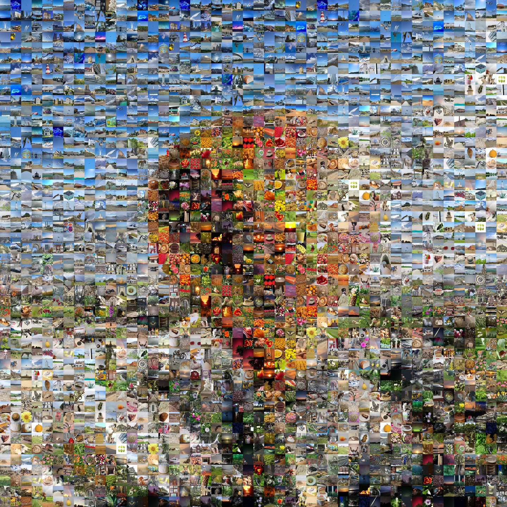

Your photo library can build any photo.
Thousandfold takes one photo and remakes it out of the rest of your photo library, tile by tile. Pick one to see how.
Coming to the App Store
This demo uses stock photos. In the app, it’s any photo you choose, built from your own library.
Same picture. Nothing tinted.
No tile gets washed with the color it needs. It only chooses, from photos that really are that color.

The photo1,215 different photosTiles in the picture
Detailed: Edges hold. Move closer to find the photos.
This demo has 1,555 stock photos, so it reuses some. The more photos in your library, the fewer repeats.
Start with anything.
A photo you love, an idea you can only describe, or something you make yourself.
- Choose a PhotoAnything in your library
- Describe a PictureType it, and Apple Intelligence draws it
- Make Your OwnShapes, words or a doodle. No skill needed
- Surprise MeIt picks one


Not an artist? Good.
Put a heart and a name on a color and press Build It. Your photos do the rest. A mosaic forgives everything.
Watch it build.
The camera starts so low that each photo looks like a normal picture. Then it lifts, more and more come in, and somewhere on the way up you see what they’re making.
Or skip all that, and have the whole thing right away.
Nine ways to watch.
Tap one. This is the real picture, building right here.


Go in. You’ll find things.
Pinch in and the tiles sharpen into the photos they are. Tap one to see it. Then, if you like, build a new picture from that one, and go in again.
On every screen you have.
iPhone, iPad and Mac. Pictures you keep follow you through your own iCloud.

Your library stays yours.
Read here, on this device
It looks through your photos on your device and never uploads your library. There’s no account and no server of ours.
Every photo as it is
It never changes or deletes a photo, and it never tints one to fit. Each photo is used once, unless your library runs out of the very dark or very pale ones.
Careful when you share
Send a small-tiles copy, and nobody can zoom in on the photos inside. Send full detail, or a video of it building, when you want them to see the photos.
Thousandfold
Any photo you have, built from the rest of your library. For iPhone, iPad and Mac.
Coming to the App StoreGet it on the App Store